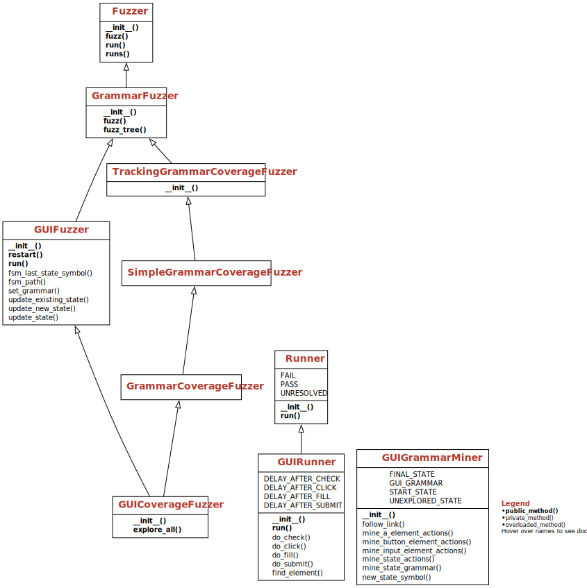

Testing Graphical User Interfaces#
In this chapter, we explore how to generate tests for Graphical User Interfaces (GUIs), abstracting from our previous examples on Web testing. Building on general means to extract user interface elements and activate them, our techniques generalize to arbitrary graphical user interfaces, from rich Web applications to mobile apps, and systematically explore user interfaces through forms and navigation elements.
from bookutils import YouTubeVideo
YouTubeVideo('79-HRgFot4k')
Prerequisites
We build on the Web server introduced in the chapter on Web testing.
Synopsis#
To use the code provided in this chapter, write
>>> from fuzzingbook.GUIFuzzer import <identifier>
and then make use of the following features.
This chapter demonstrates how to programmatically interact with user interfaces, using Selenium on Web browsers. It provides an experimental GUICoverageFuzzer class that automatically explores a user interface by systematically interacting with all available user interface elements.
The function start_webdriver() starts a headless Web browser in the background and returns a GUI driver as handle for further communication.
>>> gui_driver = start_webdriver()
The geckodriver version (0.34.0) detected in PATH at /Users/zeller/bin/geckodriver might not be compatible with the detected firefox version (135.03); currently, geckodriver 0.35.0 is recommended for firefox 135.*, so it is advised to delete the driver in PATH and retry
We let the browser open the URL of the server we want to investigate (in this case, the vulnerable server from the chapter on Web fuzzing) and obtain a screenshot.
>>> gui_driver.get(httpd_url)
>>> Image(gui_driver.get_screenshot_as_png())

The GUICoverageFuzzer class explores the user interface and builds a grammar that encodes all states as well as the user interactions required to move from one state to the next. It is paired with a GUIRunner which interacts with the GUI driver.
>>> gui_fuzzer = GUICoverageFuzzer(gui_driver)
>>> gui_runner = GUIRunner(gui_driver)
The explore_all() method extracts all states and all transitions from a Web user interface.
>>> gui_fuzzer.explore_all(gui_runner)
The grammar embeds a finite state automation and is best visualized as such.
>>> fsm_diagram(gui_fuzzer.grammar)

The GUI Fuzzer fuzz() method produces sequences of interactions that follow paths through the finite state machine. Since GUICoverageFuzzer is derived from CoverageFuzzer (see the chapter on coverage-based grammar fuzzing), it automatically covers (a) as many transitions between states as well as (b) as many form elements as possible. In our case, the first set of actions explores the transition via the “order form” link; the second set then goes until the “
>>> gui_driver.get(httpd_url)
>>> actions = gui_fuzzer.fuzz()
>>> print(actions)
fill('city', 'U')
fill('email', 'r@z')
fill('name', 'H')
check('terms', True)
fill('zip', '3')
submit('submit')
click('order form')
fill('city', 'q')
fill('email', 'v@p')
fill('name', 's')
check('terms', True)
fill('zip', '4')
submit('submit')
These actions can be fed into the GUI runner, which will execute them on the given GUI driver.
>>> gui_driver.get(httpd_url)
>>> result, outcome = gui_runner.run(actions)
>>> Image(gui_driver.get_screenshot_as_png())

Further invocations of fuzz() will further cover the model – for instance, exploring the terms and conditions.
Internally, GUIFuzzer and GUICoverageFuzzer use a subclass GUIGrammarMiner which implements the analysis of the GUI and all its states. Subclassing GUIGrammarMiner allows extending the interpretation of GUIs; the GUIFuzzer constructor allows passing a miner via the miner keyword parameter.
A tool like GUICoverageFuzzer will provide “deep” exploration of user interfaces, even filling out forms to explore what is behind them. Keep in mind, though, that GUICoverageFuzzer is experimental: It only supports a subset of HTML form and link features, and does not take JavaScript into account.

Automated GUI Interaction#
In the chapter on Web testing, we have shown how to test Web-based interfaces by directly interacting with a Web server using the HTTP protocol, and processing the retrieved HTML pages to identify user interface elements. While these techniques work well for user interfaces that are based on HTML only, they fail as soon as there are interactive elements that use JavaScript to execute code within the browser, and generate and change the user interface without having to interact with the browser.
In this chapter, we therefore take a different approach to user interface testing. Rather than using HTTP and HTML as the mechanisms for interaction, we leverage a dedicated UI testing framework, which allows us to
query the program under test for available user interface elements, and
query the UI elements for how they can be interacted with.
Although we will again illustrate our approach using a Web server, the approach easily generalizes to arbitrary user interfaces. In fact, the UI testing framework we use, Selenium, also comes in variants that run for Android apps.
Our Web Server, Again#
As in the chapter on Web testing, we run a Web server that allows us to order products.
import bookutils.setup
from typing import Set, FrozenSet, List, Optional, Tuple, Any
import os
import sys
# ignore
if 'CI' in os.environ:
# Can't run this in our continuous environment,
# since it can't run a headless Web browser
sys.exit(0)
from WebFuzzer import init_db, start_httpd, webbrowser, print_httpd_messages
from WebFuzzer import print_url, ORDERS_DB
import html
db = init_db()
This is the address of our web server:
httpd_process, httpd_url = start_httpd()
print_url(httpd_url)
Using webbrowser(), we can retrieve the HTML of the home page, and use HTML() to render it.
from IPython.display import display, Image
from bookutils import HTML, rich_output
HTML(webbrowser(httpd_url))
127.0.0.1 - - [16/Jan/2025 11:12:35] "GET / HTTP/1.1" 200 -
Remote Control with Selenium#
Let us take a look at the GUI above. In contrast to the chapter on Web testing, we do not assume we can access the HTML source of the current page. All we assume is that there is a set of user interface elements we can interact with.
Selenium is a framework for testing Web applications by automating interaction in the browser. Selenium provides an API that allows one to launch a Web browser, query the state of the user interface, and interact with individual user interface elements. The Selenium API is available in a number of languages; we use the Selenium API for Python.
A Selenium web driver is the interface between a program and a browser controlled by the program. The following code starts a Web browser in the background, which we then control through the web driver.
from selenium import webdriver
We support both Firefox and Google Chrome.
BROWSER = 'firefox' # Set to 'chrome' if you prefer Chrome
Setting up Firefox#
For Firefox, you have to make sure the geckodriver program is in your path.
import shutil
if BROWSER == 'firefox':
assert shutil.which('geckodriver') is not None, \
"Please install the 'geckodriver' executable " \
"from https://github.com/mozilla/geckodriver/releases"
Setting up Chrome#
For Chrome, you may have to make sure the chromedriver program is in your path.
if BROWSER == 'chrome':
assert shutil.which('chromedriver') is not None, \
"Please install the 'chromedriver' executable " \
"from https://chromedriver.chromium.org"
Running a Headless Browser#
The browser is headless, meaning that it does not show on the screen.
HEADLESS = True
Note: If the notebook server runs locally (i.e. on the same machine on which you are seeing this), you can also set HEADLESS to False and see what happens right on the screen as you execute the notebook cells. This is very much recommended for interactive sessions.
Starting the Web driver#
This code starts the Selenium web driver.
def start_webdriver(browser=BROWSER, headless=HEADLESS, zoom=1.4):
# Set headless option
if browser == 'firefox':
options = webdriver.FirefoxOptions()
if headless:
# See https://www.browserstack.com/guide/firefox-headless
options.add_argument("--headless")
elif browser == 'chrome':
options = webdriver.ChromeOptions()
if headless:
# See https://www.selenium.dev/blog/2023/headless-is-going-away/
options.add_argument("--headless=new")
else:
assert False, "Select 'firefox' or 'chrome' as browser"
# Start the browser, and obtain a _web driver_ object such that we can interact with it.
if browser == 'firefox':
# For firefox, set a higher resolution for our screenshots
options.set_preference("layout.css.devPixelsPerPx", repr(zoom))
gui_driver = webdriver.Firefox(options=options)
# We set the window size such that it fits our order form exactly;
# this is useful for not wasting too much space when taking screen shots.
gui_driver.set_window_size(700, 300)
elif browser == 'chrome':
gui_driver = webdriver.Chrome(options=options)
gui_driver.set_window_size(700, 210 if headless else 340)
return gui_driver
gui_driver = start_webdriver(browser=BROWSER, headless=HEADLESS)
The geckodriver version (0.34.0) detected in PATH at /Users/zeller/bin/geckodriver might not be compatible with the detected firefox version (135.03); currently, geckodriver 0.35.0 is recommended for firefox 135.*, so it is advised to delete the driver in PATH and retry
We can now interact with the browser programmatically. First, we have it navigate to the URL of our Web server:
gui_driver.get(httpd_url)
We see that the home page is actually accessed, together with a (failing) request to get a page icon:
print_httpd_messages()
127.0.0.1 - - [16/Jan/2025 11:12:38] "GET / HTTP/1.1" 200 -
127.0.0.1 - - [16/Jan/2025 11:12:38] "GET /favicon.ico HTTP/1.1" 404 -
To see what the “headless” browser displays, we can obtain a screenshot. We see that it actually displays the home page.
Image(gui_driver.get_screenshot_as_png())

Filling out Forms#
To interact with the Web page through Selenium and the browser, we can query Selenium for individual elements. For instance, we can access the UI element whose name attribute (as defined in HTML) is "name".
from selenium.webdriver.common.by import By
name = gui_driver.find_element(By.NAME, "name")
Once we have an element, we can interact with it. Since name is a text field, we can send it a string using the send_keys() method; the string will be translated into appropriate keystrokes.
name.send_keys("Jane Doe")
In the screenshot, we can see that the name field is now filled:
Image(gui_driver.get_screenshot_as_png())
Similarly, we can fill out the email, city, and ZIP fields:
email = gui_driver.find_element(By.NAME, "email")
email.send_keys("j.doe@example.com")
city = gui_driver.find_element(By.NAME, 'city')
city.send_keys("Seattle")
zip = gui_driver.find_element(By.NAME, 'zip')
zip.send_keys("98104")
Image(gui_driver.get_screenshot_as_png())
The check box for terms and conditions is not filled out, but clicked instead using the click() method.
terms = gui_driver.find_element(By.NAME, 'terms')
terms.click()
Image(gui_driver.get_screenshot_as_png())
The form is now fully filled out. By clicking on the submit button, we can place the order:
submit = gui_driver.find_element(By.NAME, 'submit')
submit.click()
We see that the order is being processed, and that the Web browser has switched to the confirmation page.
print_httpd_messages()
127.0.0.1 - - [16/Jan/2025 11:12:39] INSERT INTO orders VALUES ('tshirt', 'Jane Doe', 'j.doe@example.com', 'Seattle', '98104')
127.0.0.1 - - [16/Jan/2025 11:12:39] "GET /order?item=tshirt&name=Jane+Doe&email=j.doe%40example.com&city=Seattle&zip=98104&terms=on&submit=Place+order HTTP/1.1" 200 -
Image(gui_driver.get_screenshot_as_png())
Navigating#
Just as we fill out forms, we can also navigate through a website by clicking on links. Let us go back to the home page:
gui_driver.back()
Image(gui_driver.get_screenshot_as_png())
We can query the web driver for all elements of a particular type. Querying for HTML anchor elements (<a>) for instance, gives us all links on a page.
links = gui_driver.find_elements(By.TAG_NAME, "a")
We can query the attributes of UI elements – for instance, the URL the first anchor on the page links to:
links[0].get_attribute('href')
'http://127.0.0.1:8800/terms'
What happens if we click on it? Very simple: We switch to the Web page being referenced.
links[0].click()
print_httpd_messages()
127.0.0.1 - - [16/Jan/2025 11:12:39] "GET /terms HTTP/1.1" 200 -
Image(gui_driver.get_screenshot_as_png())

Okay. Let’s get back to our home page again.
gui_driver.back()
print_httpd_messages()
Image(gui_driver.get_screenshot_as_png())
Writing Test Cases#
The above calls, interacting with a user interface automatically, are typically used in Selenium tests – that is, code snippets that interact with a website, occasionally checking whether everything works as expected. The following code, for instance, places an order just as above. It then retrieves the title element and checks whether the title contains a “Thank you” message, indicating success.
def test_successful_order(driver, url):
name = "Walter White"
email = "white@jpwynne.edu"
city = "Albuquerque"
zip_code = "87101"
driver.get(url)
driver.find_element(By.NAME, "name").send_keys(name)
driver.find_element(By.NAME, "email").send_keys(email)
driver.find_element(By.NAME, 'city').send_keys(city)
driver.find_element(By.NAME, 'zip').send_keys(zip_code)
driver.find_element(By.NAME, 'terms').click()
driver.find_element(By.NAME, 'submit').click()
title = driver.find_element(By.ID, 'title')
assert title is not None
assert title.text.find("Thank you") >= 0
confirmation = driver.find_element(By.ID, "confirmation")
assert confirmation is not None
assert confirmation.text.find(name) >= 0
assert confirmation.text.find(email) >= 0
assert confirmation.text.find(city) >= 0
assert confirmation.text.find(zip_code) >= 0
return True
test_successful_order(gui_driver, httpd_url)
True
In a similar vein, we can set up automated test cases for unsuccessful orders, canceling orders, changing orders, and many more. All these test cases would be automatically run after any change to the program code, ensuring the Web application still works.
Of course, writing such tests is quite some effort. Hence, in the remainder of this chapter, we will again explore how to automatically generate them.
Retrieving User Interface Actions#
To automatically interact with a user interface, we first need to find out which elements there are, and which user interactions (or short actions) they support.
User Interface Elements#
We start with finding available user elements. Let us get back to the order form.
gui_driver.get(httpd_url)
Image(gui_driver.get_screenshot_as_png())
Using find_elements(By.TAG_NAME, ) (and other similar find_elements_...() functions), we can retrieve all elements of a particular type, such as HTML input elements.
ui_elements = gui_driver.find_elements(By.TAG_NAME, "input")
For each element, we can retrieve its HTML attributes, using get_attribute(). We can thus retrieve the name and type of each input element (if defined).
for element in ui_elements:
print("Name: %-10s | Type: %-10s | Text: %s" %
(element.get_attribute('name'),
element.get_attribute('type'),
element.text))
Name: name | Type: text | Text:
Name: email | Type: email | Text:
Name: city | Type: text | Text:
Name: zip | Type: number | Text:
Name: terms | Type: checkbox | Text:
Name: submit | Type: submit | Text:
ui_elements = gui_driver.find_elements(By.TAG_NAME, "a")
for element in ui_elements:
print("Name: %-10s | Type: %-10s | Text: %s" %
(element.get_attribute('name'),
element.get_attribute('type'),
element.text))
Name: | Type: | Text: terms and conditions
User Interface Actions#
Similarly to what we did in the chapter on Web fuzzing, our idea is now to mine a grammar for the user interface – first for an individual user interface page (i.e., a single Web page), later for all pages offered by the application. The idea is that a grammar defines legal sequences of actions – clicks and keystrokes – that can be applied on the application.
We assume the following actions:
fill(<name>, <text>)– fill the UI input element named<name>with the text<text>.check(<name>, <value>)– set the UI checkbox<name>to the given value<value>(True or False)submit(<name>)– submit the form by clicking on the UI element<name>.click(<name>)– click on the UI element<name>, typically for following a link.
This sequence of actions, for instance would fill out the order form:
fill('name', "Walter White")
fill('email', "white@jpwynne.edu")
fill('city', "Albuquerque")
fill('zip', "87101")
check('terms', True)
submit('submit')
Our set of actions is deliberately defined to be small – for real user interfaces, one would also have to define interactions such as swipes, double clicks, long clicks, right button clicks, modifier keys, and more. Selenium supports all of this; but in the interest of simplicity, we focus on the most important set of interactions.
Retrieving Actions#
As a first step in mining an action grammar, we need to be able to retrieve possible interactions. We introduce a class GUIGrammarMiner, which is set to do precisely that.
class GUIGrammarMiner:
"""Retrieve a grammar of possible GUI interaction sequences"""
def __init__(self, driver, stay_on_host: bool = True) -> None:
"""Constructor.
`driver` - a web driver as produced by Selenium.
`stay_on_host` - if True (default), no not follow links to other hosts.
"""
self.driver = driver
self.stay_on_host = stay_on_host
self.grammar: Grammar = {}
Excursion: Implementing Retrieving Actions#
Our first task is to obtain the set of possible interactions. Given a single UI page, the method mine_input_actions() of GUIGrammarMiner returns a set of actions as defined above. It first gets all input elements, followed by button elements, finally followed by links (a elements), and merges them into a set. (We use a frozenset here since we want to use the set as an index later.)
class GUIGrammarMiner(GUIGrammarMiner):
def mine_state_actions(self) -> FrozenSet[str]:
"""Return a set of all possible actions on the current Web site.
Can be overloaded in subclasses."""
return frozenset(self.mine_input_element_actions()
| self.mine_button_element_actions()
| self.mine_a_element_actions())
def mine_input_element_actions(self) -> Set[str]:
return set() # to be defined later
def mine_button_element_actions(self) -> Set[str]:
return set() # to be defined later
def mine_a_element_actions(self) -> Set[str]:
return set() # to be defined later
Input Element Actions#
Mining input actions goes through the set of input elements, and returns an action depending on the input type. If the input field is a text, for instance, the associated action is fill(); for checkboxes, the action is check().
The respective values are placeholders depending on the type; if the input field is a number, for instance, the value becomes <number>. As these actions later become part of the grammar, they will be expanded into actual values during grammar expansion.
from selenium.common.exceptions import StaleElementReferenceException
class GUIGrammarMiner(GUIGrammarMiner):
def mine_input_element_actions(self) -> Set[str]:
"""Determine all input actions on the current Web page"""
actions = set()
for elem in self.driver.find_elements(By.TAG_NAME, "input"):
try:
input_type = elem.get_attribute("type")
input_name = elem.get_attribute("name")
if input_name is None:
input_name = elem.text
if input_type in ["checkbox", "radio"]:
actions.add("check('%s', <boolean>)" % html.escape(input_name))
elif input_type in ["text", "number", "email", "password"]:
actions.add("fill('%s', '<%s>')" % (html.escape(input_name), html.escape(input_type)))
elif input_type in ["button", "submit"]:
actions.add("submit('%s')" % html.escape(input_name))
elif input_type in ["hidden"]:
pass
else:
# TODO: Handle more types here
actions.add("fill('%s', <%s>)" % (html.escape(input_name), html.escape(input_type)))
except StaleElementReferenceException:
pass
return actions
Applied on our order form, we see that the method gets us all input actions:
gui_grammar_miner = GUIGrammarMiner(gui_driver)
gui_grammar_miner.mine_input_element_actions()
{"check('terms', <boolean>)",
"fill('city', '<text>')",
"fill('email', '<email>')",
"fill('name', '<text>')",
"fill('zip', '<number>')",
"submit('submit')"}
Link Element Actions#
When following links, we need to make sure that we stay on the current host – we want to explore a single website only, not all the Internet. To this end, we check the href attribute of the link to check whether it still points to the same host. If it does not, we give it a special action ignore(), which, as the name suggests, will later be ignored as it comes to executing these actions. We still return an action, though, as we use the set of actions to characterize a state in the application.
from urllib.parse import urljoin, urlsplit
class GUIGrammarMiner(GUIGrammarMiner):
def mine_a_element_actions(self) -> Set[str]:
"""Determine all link actions on the current Web page"""
actions = set()
for elem in self.driver.find_elements(By.TAG_NAME, "a"):
try:
a_href = elem.get_attribute("href")
if a_href is not None:
if self.follow_link(a_href):
actions.add("click('%s')" % html.escape(elem.text))
else:
actions.add("ignore('%s')" % html.escape(elem.text))
except StaleElementReferenceException:
pass
return actions
To check whether we can follow a link, the method follow_link() checks the URL:
class GUIGrammarMiner(GUIGrammarMiner):
def follow_link(self, link: str) -> bool:
"""Return True iff we are allowed to follow the `link` URL"""
if not self.stay_on_host:
return True
current_url = self.driver.current_url
target_url = urljoin(current_url, link)
return urlsplit(current_url).hostname == urlsplit(target_url).hostname
In our application, we would not be allowed to follow a link to foo.bar:
gui_grammar_miner = GUIGrammarMiner(gui_driver)
gui_grammar_miner.follow_link("ftp://foo.bar/")
False
Following a link to localhost, though, works well:
gui_grammar_miner.follow_link("https://127.0.0.1/")
True
When adapting this for other user interfaces, similar measures would be taken to ensure we stay in the same application.
Running this method on our page gets us the set of links:
gui_grammar_miner = GUIGrammarMiner(gui_driver)
gui_grammar_miner.mine_a_element_actions()
{"click('terms and conditions')"}
End of Excursion#
Let us show GUIGrammarMiner in action, using its mine_state_actions() method to retrieve all elements from our current page. We see that we obtain input element actions, button element actions, and link element actions.
gui_grammar_miner = GUIGrammarMiner(gui_driver)
gui_grammar_miner.mine_state_actions()
frozenset({"check('terms', <boolean>)",
"click('terms and conditions')",
"fill('city', '<text>')",
"fill('email', '<email>')",
"fill('name', '<text>')",
"fill('zip', '<number>')",
"submit('submit')"})
We assume that we can identify a user interface state from the set of interactive elements it contains – that is, the current Web page is identified by the set above. This is in contrast to Web fuzzing, where we assumed the URL to uniquely characterize a page – but with JavaScript, the URL can stay unchanged although the page contents change, and UIs other than the Web may have no concept of unique URLs. Therefore, we say that the way a UI can be interacted with uniquely defines its state.
Models for User Interfaces#
User Interfaces as Finite State Machines#
Now that we can retrieve UI elements from a page, let us go and systematically explore a user interface. The idea is to represent the user interface as a finite state machine – that is, a sequence of states that can be reached by interacting with the individual user interface elements.
Let us illustrate such a finite state machine by looking at our Web server. The following diagram shows the states our server can be in:
# ignore
from graphviz import Digraph
# ignore
from GrammarFuzzer import dot_escape
# ignore
dot = Digraph(comment="Finite State Machine")
dot.node(dot_escape('<start>'))
dot.edge(dot_escape('<start>'),
dot_escape('<Order Form>'))
dot.edge(dot_escape('<Order Form>'),
dot_escape('<Terms and Conditions>'), "click('Terms and conditions')")
dot.edge(dot_escape('<Order Form>'),
dot_escape('<Thank You>'), r"fill(...)\lsubmit('submit')")
dot.edge(dot_escape('<Terms and Conditions>'),
dot_escape('<Order Form>'), "click('order form')")
dot.edge(dot_escape('<Thank You>'),
dot_escape('<Order Form>'), "click('order form')")
display(dot)
Initially, we are in the <Order Form> state. From here, we can click on Terms and Conditions, and we’ll be in the Terms and Conditions state, showing the page with the same title. We can also fill out the form and place the order, having us end in the Thank You state (again showing the page with the same title). From both <Terms and Conditions> and <Thank You>, we can return to the order form by clicking on the order form link.
State Machines as Grammars#
To systematically explore a user interface, we must retrieve its finite state machine, and eventually cover all states and transitions. In the presence of forms, such an exploration is difficult, as we need a special mechanism to fill out forms and submit the values to get to the next state. There is a trick, though, which allows us to have a single representation for both states and (form) values. We can embed the finite state machine into a grammar, which is then used for both states and form values.
To embed a finite state machine into a grammar, we proceed as follows:
Every state \(\langle s \rangle\) in the finite state machine becomes a symbol \(\langle s \rangle\) in the grammar.
Every transition in the finite state machine from \(\langle s \rangle\) to \(\langle t \rangle\) and actions \(a_1, a_2, \dots\) becomes an alternative of \(\langle s \rangle\) in the form \(a_1, a_2, dots\) \(\langle t \rangle\) in the grammar.
The above finite state machine thus gets encoded into the grammar
<start> ::= <Order Form>
<Order Form> ::= click('Terms and Conditions') <Terms and Conditions> |
fill(...) submit('submit') <Thank You>
<Terms and Conditions> ::= click('order form') <Order Form>
<Thank You> ::= click('order form') <Order Form>
Expanding this grammar gets us a stream of actions, navigating through the user interface:
fill(...) submit('submit') click('order form') click('Terms and Conditions') click('order form') ...
This stream is actually infinite (as one can interact with the UI forever); to have it end, one can introduce an alternative <end> that simply expands to the empty string, without having any expansion (state) follow.
Retrieving State Grammars#
Let us extend GUIGrammarMiner such that it retrieves a grammar from the user interface in its current state.
Excursion: Implementing Extracting State Grammars#
We first define a constant GUI_GRAMMAR that serves as template for all sorts of input types. We will use this to fill out forms.
\todo{}: Have a common base class GrammarMiner with __init__() and mine_grammar()
from Grammars import new_symbol
from Grammars import nonterminals, START_SYMBOL
from Grammars import extend_grammar, unreachable_nonterminals, crange, srange
from Grammars import syntax_diagram, is_valid_grammar, Grammar
class GUIGrammarMiner(GUIGrammarMiner):
START_STATE = "<state>"
UNEXPLORED_STATE = "<unexplored>"
FINAL_STATE = "<end>"
GUI_GRAMMAR: Grammar = ({
START_SYMBOL: [START_STATE],
UNEXPLORED_STATE: [""],
FINAL_STATE: [""],
"<text>": ["<string>"],
"<string>": ["<character>", "<string><character>"],
"<character>": ["<letter>", "<digit>", "<special>"],
"<letter>": crange('a', 'z') + crange('A', 'Z'),
"<number>": ["<digits>"],
"<digits>": ["<digit>", "<digits><digit>"],
"<digit>": crange('0', '9'),
"<special>": srange(". !"),
"<email>": ["<letters>@<letters>"],
"<letters>": ["<letter>", "<letters><letter>"],
"<boolean>": ["True", "False"],
# Use a fixed password in case we need to repeat it
"<password>": ["abcABC.123"],
"<hidden>": ["<string>"],
})
syntax_diagram(GUIGrammarMiner.GUI_GRAMMAR)
start
unexplored

end
text

string
character
letter
number
digits
digit

special
email
letters
boolean
password
hidden
The method mine_state_grammar() goes through the actions mined from the page (using mine_state_actions()) and creates a grammar for the current state. For each click() and submit() action, it assumes a new state follows, and introduces an appropriate state symbol into the grammar – a state symbol that now will be marked as <unexplored>, but will be expanded later as the appropriate state is seen.
class GUIGrammarMiner(GUIGrammarMiner):
def new_state_symbol(self, grammar: Grammar) -> str:
"""Return a new symbol for some state in `grammar`"""
return new_symbol(grammar, self.START_STATE)
def mine_state_grammar(self, grammar: Grammar = {},
state_symbol: Optional[str] = None) -> Grammar:
"""Return a state grammar for the actions on the current Web site.
Can be overloaded in subclasses."""
grammar = extend_grammar(self.GUI_GRAMMAR, grammar) # type: ignore
if state_symbol is None:
state_symbol = self.new_state_symbol(grammar)
grammar[state_symbol] = []
alternatives = []
form = ""
submit = None
for action in self.mine_state_actions():
if action.startswith("submit"):
submit = action
elif action.startswith("click"):
link_target = self.new_state_symbol(grammar)
grammar[link_target] = [self.UNEXPLORED_STATE]
alternatives.append(action + '\n' + link_target)
elif action.startswith("ignore"):
pass
else: # fill(), check() actions
if len(form) > 0:
form += '\n'
form += action
if submit is not None:
if len(form) > 0:
form += '\n'
form += submit
if len(form) > 0:
form_target = self.new_state_symbol(grammar)
grammar[form_target] = [self.UNEXPLORED_STATE]
alternatives.append(form + '\n' + form_target)
alternatives += [self.FINAL_STATE]
grammar[state_symbol] = alternatives # type: ignore
# Remove unused parts
for nonterminal in unreachable_nonterminals(grammar):
del grammar[nonterminal]
assert is_valid_grammar(grammar)
return grammar
To better see the state structure, the function fsm_diagram() shows the resulting state grammar as a finite state machine. (This assumes that the grammar actually encodes a state machine.)
from collections import deque
from bookutils import unicode_escape
def fsm_diagram(grammar: Grammar, start_symbol: str = START_SYMBOL) -> Any:
"""Produce a FSM diagram for the state grammar `grammar`.
`start_symbol` - the start symbol (default: START_SYMBOL)"""
from graphviz import Digraph
from IPython.display import display
def left_align(label: str) -> str:
"""Render `label` as left-aligned in dot"""
return dot_escape(label.replace('\n', r'\l')).replace(r'\\l', '\\l')
dot = Digraph(comment="Grammar as Finite State Machine")
symbols = deque([start_symbol])
symbols_seen = set()
while len(symbols) > 0:
symbol = symbols.popleft()
symbols_seen.add(symbol)
dot.node(symbol, dot_escape(unicode_escape(symbol)))
for expansion in grammar[symbol]:
assert type(expansion) == str # no opts() here
nts = nonterminals(expansion)
if len(nts) > 0:
target_symbol = nts[-1]
if target_symbol not in symbols_seen:
symbols.append(target_symbol)
label = expansion.replace(target_symbol, '')
dot.edge(symbol, target_symbol, left_align(unicode_escape(label)))
return display(dot)
End of Excursion#
Let us show GUIGrammarMiner() in action. Its method mine_state_grammar() extracts the grammar for the current Web page:
gui_grammar_miner = GUIGrammarMiner(gui_driver)
state_grammar = gui_grammar_miner.mine_state_grammar()
state_grammar
{'<start>': ['<state>'],
'<unexplored>': [''],
'<end>': [''],
'<text>': ['<string>'],
'<string>': ['<character>', '<string><character>'],
'<character>': ['<letter>', '<digit>', '<special>'],
'<letter>': ['a',
'b',
'c',
'd',
'e',
'f',
'g',
'h',
'i',
'j',
'k',
'l',
'm',
'n',
'o',
'p',
'q',
'r',
's',
't',
'u',
'v',
'w',
'x',
'y',
'z',
'A',
'B',
'C',
'D',
'E',
'F',
'G',
'H',
'I',
'J',
'K',
'L',
'M',
'N',
'O',
'P',
'Q',
'R',
'S',
'T',
'U',
'V',
'W',
'X',
'Y',
'Z'],
'<number>': ['<digits>'],
'<digits>': ['<digit>', '<digits><digit>'],
'<digit>': ['0', '1', '2', '3', '4', '5', '6', '7', '8', '9'],
'<special>': ['.', ' ', '!'],
'<email>': ['<letters>@<letters>'],
'<letters>': ['<letter>', '<letters><letter>'],
'<boolean>': ['True', 'False'],
'<state>': ["click('terms and conditions')\n<state-1>",
"fill('city', '<text>')\nfill('email', '<email>')\nfill('name', '<text>')\ncheck('terms', <boolean>)\nfill('zip', '<number>')\nsubmit('submit')\n<state-2>",
'<end>'],
'<state-1>': ['<unexplored>'],
'<state-2>': ['<unexplored>']}
To better see the structure of the state grammar, we can visualize it as a state machine. We see that it nicely reflects what we can see from our Web server’s home page:
fsm_diagram(state_grammar)
From the start state (<state>), we can go and either click on “terms and conditions”, ending in <state-1>, or fill out the form, ending in <state-2>.
state_grammar[GUIGrammarMiner.START_STATE]
["click('terms and conditions')\n<state-1>",
"fill('city', '<text>')\nfill('email', '<email>')\nfill('name', '<text>')\ncheck('terms', <boolean>)\nfill('zip', '<number>')\nsubmit('submit')\n<state-2>",
'<end>']
Both these states are yet unexplored:
state_grammar['<state-1>']
['<unexplored>']
state_grammar['<state-2>']
['<unexplored>']
state_grammar['<unexplored>']
['']
Given the grammar, we can use any of our grammar fuzzers to create valid input sequences:
from GrammarFuzzer import GrammarFuzzer
gui_fuzzer = GrammarFuzzer(state_grammar)
while True:
action = gui_fuzzer.fuzz()
if action.find('submit(') > 0:
break
print(action)
fill('city', '.')
fill('email', 'EB@iYN')
fill('name', '.')
check('terms', True)
fill('zip', '3')
submit('submit')
These actions, however, must also be executed such that we can explore the user interface. This is what we do in the next section.
Executing User Interface Actions#
To execute actions, we introduce a Runner class, conveniently named GUIRunner. Its run() method executes the actions as given in an action string.
from Fuzzer import Runner
class GUIRunner(Runner):
"""Execute the actions in a given action string"""
def __init__(self, driver) -> None:
"""Constructor. `driver` is a Selenium Web driver"""
self.driver = driver
Excursion: Implementing Executing UI Actions#
The way we implement run() is fairly simple: We introduce four methods named fill(), check(), submit() and click(), and run exec() on the action string to have the Python interpreter invoke these methods.
Running exec() on third-party input is dangerous, as the names of UI elements may contain valid Python code. We restrict access to the four functions defined above, and also set __builtins__ to the empty dictionary such that built-in Python functions are not available during exec(). This will prevent accidents, but as we will see in the chapter on information flow, it is still possible to inject Python code. To prevent such injection attacks, we use html.escape() to quote angle and quote characters in all third-party strings.
class GUIRunner(GUIRunner):
def run(self, inp: str) -> Tuple[str, str]:
"""Execute the action string `inp` on the current Web site.
Return a pair (`inp`, `outcome`)."""
def fill(name, value):
self.do_fill(html.unescape(name), html.unescape(value))
def check(name, state):
self.do_check(html.unescape(name), state)
def submit(name):
self.do_submit(html.unescape(name))
def click(name):
self.do_click(html.unescape(name))
exec(inp, {'__builtins__': {}},
{
'fill': fill,
'check': check,
'submit': submit,
'click': click,
})
return inp, self.PASS
To identify elements in an action, we first search them by their name, and then by the displayed link text.
from selenium.common.exceptions import NoSuchElementException
from selenium.common.exceptions import ElementClickInterceptedException, ElementNotInteractableException
class GUIRunner(GUIRunner):
def find_element(self, name: str) -> Any:
"""Search for an element named `name` on the current Web site.
Matches can occur by name or by link text."""
try:
return self.driver.find_element(By.NAME, name)
except NoSuchElementException:
return self.driver.find_element(By.LINK_TEXT, name)
The implementations of the actions simply defer to the appropriate Selenium methods, introducing explicit delays such that the page can reload and refresh.
from selenium.webdriver.support.ui import WebDriverWait
class GUIRunner(GUIRunner):
# Delays (in seconds)
DELAY_AFTER_FILL = 0.1
DELAY_AFTER_CHECK = 0.1
DELAY_AFTER_SUBMIT = 1.5
DELAY_AFTER_CLICK = 1.5
class GUIRunner(GUIRunner):
def do_fill(self, name: str, value: str) -> None:
"""Fill the text element `name` with `value`"""
element = self.find_element(name)
element.send_keys(value)
WebDriverWait(self.driver, self.DELAY_AFTER_FILL)
class GUIRunner(GUIRunner):
def do_check(self, name: str, state: bool) -> None:
"""Set the check element `name` to `state`"""
element = self.find_element(name)
if bool(state) != bool(element.is_selected()):
element.click()
WebDriverWait(self.driver, self.DELAY_AFTER_CHECK)
class GUIRunner(GUIRunner):
def do_submit(self, name: str) -> None:
"""Click on the submit element `name`"""
element = self.find_element(name)
element.click()
WebDriverWait(self.driver, self.DELAY_AFTER_SUBMIT)
class GUIRunner(GUIRunner):
def do_click(self, name: str) -> None:
"""Click on the element `name`"""
element = self.find_element(name)
element.click()
WebDriverWait(self.driver, self.DELAY_AFTER_CLICK)
End of Excursion#
Let us try out GUIRunner and its run() method. We create a runner on our Web server, and let it execute a fill() action:
gui_driver.get(httpd_url)
gui_runner = GUIRunner(gui_driver)
gui_runner.run("fill('name', 'Walter White')")
("fill('name', 'Walter White')", 'PASS')
Image(gui_driver.get_screenshot_as_png())
A submit() action submits the order. (Note that our Web server does no effort whatsoever to validate the form.)
gui_runner.run("submit('submit')")
("submit('submit')", 'PASS')
Image(gui_driver.get_screenshot_as_png())
Of course, we can also execute action sequences generated from the grammar. This allows us to fill the form again and again, using values matching the type given in the form.
gui_driver.get(httpd_url)
gui_fuzzer = GrammarFuzzer(state_grammar)
while True:
action = gui_fuzzer.fuzz()
if action.find('submit(') > 0:
break
print(action)
fill('city', 'S0.')
fill('email', 'o@i')
fill('name', 'MF')
check('terms', False)
fill('zip', '7')
submit('submit')
gui_runner.run(action)
("fill('city', 'S0.')\nfill('email', 'o@i')\nfill('name', 'MF')\ncheck('terms', False)\nfill('zip', '7')\nsubmit('submit')\n",
'PASS')
Image(gui_driver.get_screenshot_as_png())
Exploring User Interfaces#
So far, our grammar retrieval and execution of actions is limited to the current user interface state (i.e., the current page shown). To systematically explore a user interface, we must explore all states, notably those ending in <unexplored> – and whenever we reach a new state, again retrieve its grammar such that we may be able to reach other states. Since some states can only be reached by generating inputs, test generation and user interface exploration take place at the same time.
Consequently, we introduce a GUIFuzzer class, which generates inputs for all forms and follows all links, and which updates its grammar (i.e., its user interface model as a finite state machine) every time it encounters a new state.
Excursion: Implementing GUIFuzzer#
Exploring states and updating the grammar at the same time is a fairly complex operation, so we need to introduce quite a number of methods before we can put this to use. The GUIFuzzer constructor sets three important attributes:
state_symbol: This holds the symbol of the current state (e.g.<state-1>).state: This holds the set of actions for the current state, as returned by theGUIGrammarMinermethodmine_state_actions().states_seen: This maps the states seen (as instate) to the respective symbols.
Let us show these three attributes after initialization.
from Grammars import is_nonterminal
from GrammarFuzzer import GrammarFuzzer
class GUIFuzzer(GrammarFuzzer):
"""A fuzzer for GUIs, using Selenium."""
def __init__(self, driver, *,
miner: Optional[GUIGrammarMiner] = None,
stay_on_host: bool = True,
log_gui_exploration: bool = False,
disp_gui_exploration: bool = False,
**kwargs) -> None:
"""Constructor.
`driver` - the Selenium driver to use.
`miner` - the miner to use (default: `GUIGrammarMiner(driver)`)
`stay_on_host` - if True (default), do not explore external links.
`log_gui_exploration` - if set, print out exploration steps.
`disp_gui_exploration` - if set, display screenshot of current Web page
as well as FSM diagrams during exploration.
Other keyword arguments are passed to the `GrammarFuzzer` superclass.
"""
self.driver = driver
if miner is None:
miner = GUIGrammarMiner(driver)
self.miner = miner
self.stay_on_host = True
self.log_gui_exploration = log_gui_exploration
self.disp_gui_exploration = disp_gui_exploration
self.initial_url = driver.current_url
self.states_seen = {} # Maps states to symbols
self.state_symbol = self.miner.START_STATE
self.state: FrozenSet[str] = self.miner.mine_state_actions()
self.states_seen[self.state] = self.state_symbol
grammar = self.miner.mine_state_grammar()
super().__init__(grammar, **kwargs)
gui_driver.get(httpd_url)
The initial state symbol is always <state>:
gui_fuzzer = GUIFuzzer(gui_driver)
gui_fuzzer.state_symbol
'<state>'
The current state is characterized by the available UI actions:
gui_fuzzer.state
frozenset({"check('terms', <boolean>)",
"click('terms and conditions')",
"fill('city', '<text>')",
"fill('email', '<email>')",
"fill('name', '<text>')",
"fill('zip', '<number>')",
"submit('submit')"})
states_seen maps this state to its symbol:
gui_fuzzer.states_seen[gui_fuzzer.state]
'<state>'
The restart() method gets us back to the initial URL and resets the state. This is what we use with every new exploration.
class GUIFuzzer(GUIFuzzer):
def restart(self) -> None:
"""Get back to original URL"""
self.driver.get(self.initial_url)
self.state = frozenset(self.miner.START_STATE)
When producing a sequence of actions from the grammar, we want to know which final state we are to be in. We can retrieve this path from the derivation tree produced – it is the last symbol being expanded.
while True:
action = gui_fuzzer.fuzz()
if action.find('click(') >= 0:
break
from GrammarFuzzer import display_tree, DerivationTree
tree = gui_fuzzer.derivation_tree
display_tree(tree)
class GUIFuzzer(GUIFuzzer):
def fsm_path(self, tree: DerivationTree) -> List[str]:
"""Return sequence of state symbols."""
(node, children) = tree
if node == self.miner.UNEXPLORED_STATE:
return []
elif children is None or len(children) == 0:
return [node]
else:
return [node] + self.fsm_path(children[-1])
This is the path in the finite state machine towards the “fuzzed” state:
gui_fuzzer = GUIFuzzer(gui_driver)
gui_fuzzer.fsm_path(tree)
['<start>', '<state>', '<state-1>']
This is its last element:
class GUIFuzzer(GUIFuzzer):
def fsm_last_state_symbol(self, tree: DerivationTree) -> str:
"""Return current (expected) state symbol"""
for state in reversed(self.fsm_path(tree)):
if is_nonterminal(state):
return state
assert False
gui_fuzzer = GUIFuzzer(gui_driver)
gui_fuzzer.fsm_last_state_symbol(tree)
'<state-1>'
As we run (run()) the fuzzer, we create an action (via fuzz()) and retrieve and update the state symbol (state_symbol) we are supposed to be in after running this action. After actually running the action in the given GUIRunner, we retrieve and update the current state, using update_state().
class GUIFuzzer(GUIFuzzer):
def run(self, runner: GUIRunner) -> Tuple[str, str]: # type: ignore
"""Run the fuzzer on the given GUIRunner `runner`."""
assert isinstance(runner, GUIRunner)
self.restart()
action = self.fuzz()
self.state_symbol = self.fsm_last_state_symbol(self.derivation_tree)
if self.log_gui_exploration:
print("Action", action.strip(), "->", self.state_symbol)
result, outcome = runner.run(action)
if self.state_symbol != self.miner.FINAL_STATE:
self.update_state()
return self.state_symbol, outcome
When updating the current state, we check whether we are in a new or in a previously seen state, and invoke update_new_state() or update_existing_state(), respectively.
class GUIFuzzer(GUIFuzzer):
def update_state(self) -> None:
"""Determine current state from current Web page"""
if self.disp_gui_exploration:
display(Image(self.driver.get_screenshot_as_png()))
self.state = self.miner.mine_state_actions()
if self.state not in self.states_seen:
self.states_seen[self.state] = self.state_symbol
self.update_new_state()
else:
self.update_existing_state()
Finding a new state means that we mine a new grammar for the newly found state, and update our existing grammar with it.
class GUIFuzzer(GUIFuzzer):
def set_grammar(self, new_grammar: Grammar) -> None:
"""Set grammar to `new_grammar`."""
self.grammar = new_grammar
if self.disp_gui_exploration and rich_output():
display(fsm_diagram(self.grammar))
class GUIFuzzer(GUIFuzzer):
def update_new_state(self) -> None:
"""Found new state; extend grammar accordingly"""
if self.log_gui_exploration:
print("In new state", unicode_escape(self.state_symbol),
unicode_escape(repr(self.state)))
state_grammar = self.miner.mine_state_grammar(grammar=self.grammar,
state_symbol=self.state_symbol)
del state_grammar[START_SYMBOL]
del state_grammar[self.miner.START_STATE]
self.set_grammar(extend_grammar(self.grammar, state_grammar))
def update_existing_state(self) -> None:
pass # See below
If we find an existing state, we need to merge both states. If, for instance, we find that we are in existing <state-1> rather than in the expected <state-3>, we replace all instances of <state-3> in the grammar by <state-1>. The method replace_symbol() takes care of the renaming; update_existing_state() sets the grammar accordingly.
from Grammars import exp_string, exp_opts
def replace_symbol(grammar: Grammar,
old_symbol: str, new_symbol: str) -> Grammar:
"""Return a grammar in which all occurrences of `old_symbol` are replaced by `new_symbol`"""
new_grammar: Grammar = {}
for symbol in grammar:
new_expansions = []
for expansion in grammar[symbol]:
new_expansion_string = exp_string(expansion).replace(old_symbol, new_symbol)
if len(exp_opts(expansion)) > 0:
new_expansion = (new_expansion_string, exp_opts(expansion))
else:
new_expansion = new_expansion_string # type: ignore
new_expansions.append(new_expansion)
new_grammar[symbol] = new_expansions # type: ignore
# Remove unused parts
for nonterminal in unreachable_nonterminals(new_grammar):
del new_grammar[nonterminal]
return new_grammar
class GUIFuzzer(GUIFuzzer):
def update_existing_state(self) -> None:
"""Update actions of existing state"""
if self.log_gui_exploration:
print("In existing state", self.states_seen[self.state])
if self.state_symbol != self.states_seen[self.state]:
if self.log_gui_exploration:
print("Replacing expected state %s by %s" %
(self.state_symbol, self.states_seen[self.state]))
new_grammar = replace_symbol(self.grammar, self.state_symbol,
self.states_seen[self.state])
self.state_symbol = self.states_seen[self.state]
self.set_grammar(new_grammar)
This concludes our definitions for GUIFuzzer.
End of Excursion#
Let us put GUIFuzzer to use, enabling its logging mechanisms to see what it is doing.
gui_driver.get(httpd_url)
gui_fuzzer = GUIFuzzer(gui_driver, log_gui_exploration=True, disp_gui_exploration=True)
Running it the first time yields a new state:
gui_fuzzer.run(gui_runner)
Action click('terms and conditions') -> <state-1>
In new state <state-1> frozenset({"ignore('Creative Commons Attribution-NonCommercial-ShareAlike 4.0 International License.')", "click('order form')"})
None
('<state-1>', 'PASS')
The next actions fill out the order form.
gui_fuzzer.run(gui_runner)
Action click('terms and conditions') -> <end>
('<end>', 'PASS')
gui_fuzzer.run(gui_runner)
Action click('terms and conditions') -> <end>
('<end>', 'PASS')
At this point, our GUI model is fairly complete already. In order to systematically cover all states, random exploration is not efficient enough, though.
Covering States#
During exploration as well as during testing, we want to cover all states and transitions between states. How can we achieve this?
It turns out that we already have this. Our GrammarCoverageFuzzer from the chapter on coverage-based grammar testing strives to systematically cover all expansion alternatives in a grammar. In the finite state model, these expansion alternatives translate into transitions between states. Hence, applying the coverage strategy from GrammarCoverageFuzzer to our state grammars would automatically cover one transition after another.
How do we get these features into GUIFuzzer? Using multiple inheritance, we can create a class GUICoverageFuzzer which combines the run() method from GUIFuzzer with the coverage choices from GrammarCoverageFuzzer.
from GrammarCoverageFuzzer import GrammarCoverageFuzzer
from bookutils import inheritance_conflicts
Since the __init__() constructor is defined in both superclasses, we need to define our own constructor that serves both:
inheritance_conflicts(GUIFuzzer, GrammarCoverageFuzzer)
['__init__']
class GUICoverageFuzzer(GUIFuzzer, GrammarCoverageFuzzer):
"""Systematically explore all states of the current Web page"""
def __init__(self, *args, **kwargs):
"""Constructor. All args are passed to the `GUIFuzzer` superclass."""
GUIFuzzer.__init__(self, *args, **kwargs)
self.reset_coverage()
With GUICoverageFuzzer, we can set up a method explore_all() that keeps on running the fuzzer until there are no unexplored states anymore:
class GUICoverageFuzzer(GUICoverageFuzzer):
def explore_all(self, runner: GUIRunner, max_actions=100) -> None:
"""Explore all states of the GUI, up to `max_actions` (default 100)."""
actions = 0
while (self.miner.UNEXPLORED_STATE in self.grammar and
actions < max_actions):
actions += 1
if self.log_gui_exploration:
print("Run #" + repr(actions))
try:
self.run(runner)
except ElementClickInterceptedException:
pass
except ElementNotInteractableException:
pass
except NoSuchElementException:
pass
Let us use this to fully explore our Web server:
gui_driver.get(httpd_url)
gui_fuzzer = GUICoverageFuzzer(gui_driver)
gui_fuzzer.explore_all(gui_runner)
Success! We have covered all states:
fsm_diagram(gui_fuzzer.grammar)
We can retrieve the expansions covered so far, which of course cover all states.
gui_fuzzer.covered_expansions
{'<boolean> -> False',
'<boolean> -> True',
'<character> -> <digit>',
'<character> -> <letter>',
'<character> -> <special>',
'<digit> -> 0',
'<digit> -> 1',
'<digit> -> 2',
'<digit> -> 3',
'<digit> -> 4',
'<digit> -> 5',
'<digit> -> 6',
'<digit> -> 7',
'<digit> -> 8',
'<digit> -> 9',
'<digits> -> <digit>',
'<digits> -> <digits><digit>',
'<email> -> <letters>@<letters>',
'<end> -> ',
'<letter> -> A',
'<letter> -> B',
'<letter> -> D',
'<letter> -> H',
'<letter> -> J',
'<letter> -> K',
'<letter> -> L',
'<letter> -> M',
'<letter> -> P',
'<letter> -> Q',
'<letter> -> W',
'<letter> -> Y',
'<letter> -> b',
'<letter> -> g',
'<letter> -> h',
'<letter> -> l',
'<letter> -> m',
'<letter> -> n',
'<letter> -> q',
'<letter> -> t',
'<letter> -> v',
'<letter> -> y',
'<letters> -> <letter>',
'<letters> -> <letters><letter>',
'<number> -> <digits>',
'<special> -> .',
'<start> -> <state>',
'<state-1> -> <end>',
'<state-1> -> <unexplored>',
"<state-1> -> click('order form')\n<state-3>",
'<state-2> -> <end>',
'<state-2> -> <unexplored>',
"<state-2> -> click('order form')\n<state-4>",
'<state-3> -> <unexplored>',
'<state-4> -> <unexplored>',
'<state> -> <end>',
"<state> -> click('terms and conditions')\n<state-1>",
"<state> -> fill('city', '<text>')\nfill('email', '<email>')\nfill('name', '<text>')\ncheck('terms', <boolean>)\nfill('zip', '<number>')\nsubmit('submit')\n<state-2>",
'<string> -> <character>',
'<string> -> <string><character>',
'<text> -> <string>',
'<unexplored> -> '}
Still, we haven’t seen all expansions covered. A few digits and letters remain to be used.
gui_fuzzer.missing_expansion_coverage()
{'<letter> -> C',
'<letter> -> E',
'<letter> -> F',
'<letter> -> G',
'<letter> -> I',
'<letter> -> N',
'<letter> -> O',
'<letter> -> R',
'<letter> -> S',
'<letter> -> T',
'<letter> -> U',
'<letter> -> V',
'<letter> -> X',
'<letter> -> Z',
'<letter> -> a',
'<letter> -> c',
'<letter> -> d',
'<letter> -> e',
'<letter> -> f',
'<letter> -> i',
'<letter> -> j',
'<letter> -> k',
'<letter> -> o',
'<letter> -> p',
'<letter> -> r',
'<letter> -> s',
'<letter> -> u',
'<letter> -> w',
'<letter> -> x',
'<letter> -> z',
'<special> -> ',
'<special> -> !',
"<state-1> -> click('order form')\n<state>",
"<state-2> -> click('order form')\n<state>"}
Running the fuzzer again and again will eventually cover these expansions too, leading to letter and digit coverage within the order form.
Exploring Large Sites#
Our GUI fuzzer is robust enough to handle exploration even on nontrivial sites such as fuzzingbook.org. Let us demonstrate this:
gui_driver.get("https://www.fuzzingbook.org/html/Fuzzer.html")
Image(gui_driver.get_screenshot_as_png())

book_runner = GUIRunner(gui_driver)
book_fuzzer = GUICoverageFuzzer(gui_driver, log_gui_exploration=True) # , disp_gui_exploration=True)
We explore the first few states of the site, defined in ACTIONS:
ACTIONS = 5
book_fuzzer.explore_all(book_runner, max_actions=ACTIONS)
Run #1
Action click('discussed above') -> <state-7>
In existing state <state>
Replacing expected state <state-7> by <state>
Run #2
Action click('use the code provided in this chapter') -> <state-11>
In new state <state-11> frozenset({"ignore('installation instructions')", "click('the chapter on fuzzers')", "click('')", "click('Fuzzer')", "ignore('official instructions')", "click('Cite')", "ignore('apt.txt file in the binder/ folder')", "ignore('Last change: 2023-11-11 18:18:06+01:00')", "ignore('Creative Commons Attribution-NonCommercial-ShareAlike 4.0 International License')", "ignore('Pipenv')", "ignore('')", "ignore('bookutils')", "click('fuzzingbook.Fuzzer')", "click('The Fuzzing Book')", "ignore('requirements.txt file within the project root folder')", "ignore('MIT License')", "ignore('the project page')", "ignore('Imprint')", "ignore('pyenv-win')", "ignore('bookutils.setup')", "click('fuzzingbook.')"})
Run #3
Action click('Intro_Testing') -> <state-10>
In existing state <state>
Replacing expected state <state-10> by <state>
Run #4
Action click('chapter on mining function specifications') -> <state-5>
In new state <state-5> frozenset({"click('ExpectError')", "ignore('Last change: 2024-11-09 17:07:29+01:00')", "ignore('itertools')", "ignore('showast')", "ignore('curated list')", "click('symbolic fuzzing')", "click('Cite')", "ignore('tempfile')", "click('part on semantic fuzzing techniques')", "ignore('Ernst et al, 2001')", "ignore('Use the notebook')", "click('symbolic')", "ignore('MonkeyType')", "ignore('DAIKON dynamic invariant detector')", "click('introduction to testing')", "click('Grammars')", "click('The Fuzzing Book')", "click('GrammarFuzzer')", "click('symbolic interpretation')", "click('domain-specific fuzzing techniques')", "click('Intro_Testing')", "ignore('subprocess')", "click('fuzzingbook.DynamicInvariants')", "click('our chapter with the same name')", "click('concolic fuzzer')", "click('concolic')", "click('chapter on testing')", "ignore('code snippet from StackOverflow')", "ignore('Pacheco et al, 2005')", "ignore('sys')", "ignore('ast')", "ignore('"The state of type hints in Python"')", "click('chapter on coverage')", "ignore('functools')", "ignore('Ammons et al, 2002')", "ignore('Mypy')", "click('the next part')", "ignore('')", "ignore('Creative Commons Attribution-NonCommercial-ShareAlike 4.0 International License')", "click('chapter on information flow')", "ignore('typing')", "ignore('bookutils.setup')", "ignore('bookutils')", "ignore('MIT License')", "ignore('PyAnnotate')", "ignore('Imprint')", "click('')", "ignore('inspect')", "click('use the code provided in this chapter')", "click('Coverage')"})
Run #5
Action click('chapter on testing') -> <state-14>
In new state <state-14> frozenset({"click('ExpectError')", "check('11b29b38-9eb5-11ef-9f1d-6298cf1a578f', <boolean>)", "ignore('Beizer et al, 1990')", "click('Timer')", "click('Cite')", "click('Timer module')", "check('1251ba2e-9eb5-11ef-9f1d-6298cf1a578f', <boolean>)", "ignore('random')", "ignore('Use the notebook')", "click('use fuzzing to test programs with random inputs')", "ignore('Shellsort')", "click('The Fuzzing Book')", "click('import it')", "ignore('Newton\xe2\x80\x93Raphson method')", "click('00_Table_of_Contents.ipynb')", "ignore('Python tutorial')", "submit('')", "ignore('math.isclose()')", "click('Web Page')", "ignore('Pezz\xc3\xa8 et al, 2008')", "ignore('"Effective Software Testing: A Developer's Guide"')", "click('Background')", "ignore('Maur\xc3\xadcio Aniche, 2022')", "ignore('Last change: 2023-11-11 18:18:06+01:00')", "check('119cfd32-9eb5-11ef-9f1d-6298cf1a578f', <boolean>)", "ignore('Creative Commons Attribution-NonCommercial-ShareAlike 4.0 International License')", "ignore('')", "ignore('bookutils')", "ignore('bookutils.setup')", "ignore('MIT License')", "ignore('Myers et al, 2004')", "ignore('Imprint')", "click('')", "click('Guide for Authors')"})
After the first ACTIONS actions already, we can see that the finite state model is quite complex, with dozens of transitions still left to explore. Most of the yet unexplored states will eventually merge with existing states, yielding one state per chapter. Still, following all links on all pages will take quite some time.
# Inspect this graph in the notebook to see it in full glory
fsm_diagram(book_fuzzer.grammar)

We now have all the basic capabilities we need: We can automatically explore large websites; we can explore “deep” functionality by filling out forms; and we can have our coverage-based fuzzer automatically focus on yet unexplored states. Still, there is a lot more one can do; the exercises will give you some ideas.
gui_driver.quit()
Synopsis#
This chapter demonstrates how to programmatically interact with user interfaces, using Selenium on Web browsers. It provides an experimental GUICoverageFuzzer class that automatically explores a user interface by systematically interacting with all available user interface elements.
The function start_webdriver() starts a headless Web browser in the background and returns a GUI driver as handle for further communication.
gui_driver = start_webdriver()
The geckodriver version (0.34.0) detected in PATH at /Users/zeller/bin/geckodriver might not be compatible with the detected firefox version (135.03); currently, geckodriver 0.35.0 is recommended for firefox 135.*, so it is advised to delete the driver in PATH and retry
We let the browser open the URL of the server we want to investigate (in this case, the vulnerable server from the chapter on Web fuzzing) and obtain a screenshot.
gui_driver.get(httpd_url)
Image(gui_driver.get_screenshot_as_png())
The GUICoverageFuzzer class explores the user interface and builds a grammar that encodes all states as well as the user interactions required to move from one state to the next. It is paired with a GUIRunner which interacts with the GUI driver.
gui_fuzzer = GUICoverageFuzzer(gui_driver)
gui_runner = GUIRunner(gui_driver)
The explore_all() method extracts all states and all transitions from a Web user interface.
gui_fuzzer.explore_all(gui_runner)
The grammar embeds a finite state automation and is best visualized as such.
fsm_diagram(gui_fuzzer.grammar)
The GUI Fuzzer fuzz() method produces sequences of interactions that follow paths through the finite state machine. Since GUICoverageFuzzer is derived from CoverageFuzzer (see the chapter on coverage-based grammar fuzzing), it automatically covers (a) as many transitions between states as well as (b) as many form elements as possible. In our case, the first set of actions explores the transition via the “order form” link; the second set then goes until the “
gui_driver.get(httpd_url)
actions = gui_fuzzer.fuzz()
print(actions)
fill('city', 'U')
fill('email', 'r@z')
fill('name', 'H')
check('terms', True)
fill('zip', '3')
submit('submit')
click('order form')
fill('city', 'q')
fill('email', 'v@p')
fill('name', 's')
check('terms', True)
fill('zip', '4')
submit('submit')
These actions can be fed into the GUI runner, which will execute them on the given GUI driver.
gui_driver.get(httpd_url)
result, outcome = gui_runner.run(actions)
Image(gui_driver.get_screenshot_as_png())

Further invocations of fuzz() will further cover the model – for instance, exploring the terms and conditions.
Internally, GUIFuzzer and GUICoverageFuzzer use a subclass GUIGrammarMiner which implements the analysis of the GUI and all its states. Subclassing GUIGrammarMiner allows extending the interpretation of GUIs; the GUIFuzzer constructor allows passing a miner via the miner keyword parameter.
A tool like GUICoverageFuzzer will provide “deep” exploration of user interfaces, even filling out forms to explore what is behind them. Keep in mind, though, that GUICoverageFuzzer is experimental: It only supports a subset of HTML form and link features, and does not take JavaScript into account.
# ignore
from ClassDiagram import display_class_hierarchy
from Fuzzer import Fuzzer, Runner
from Grammars import Grammar, Expansion
from GrammarFuzzer import GrammarFuzzer, DerivationTree
# ignore
display_class_hierarchy([GUIFuzzer, GUICoverageFuzzer,
GUIRunner, GUIGrammarMiner],
public_methods=[
Fuzzer.__init__,
Fuzzer.fuzz,
Fuzzer.run,
Fuzzer.runs,
Runner.__init__,
Runner.run,
GUIRunner.__init__,
GUIRunner.run,
GrammarFuzzer.__init__,
GrammarFuzzer.fuzz,
GrammarFuzzer.fuzz_tree,
GUIFuzzer.__init__,
GUIFuzzer.restart,
GUIFuzzer.run,
GUIGrammarMiner.__init__,
GrammarCoverageFuzzer.__init__,
GUICoverageFuzzer.__init__,
GUICoverageFuzzer.explore_all,
],
types={
'DerivationTree': DerivationTree,
'Expansion': Expansion,
'Grammar': Grammar
},
project='fuzzingbook')
Lessons Learned#
Selenium is a powerful framework for interacting with user interfaces, especially Web-based user interfaces.
A finite state model can encode user interface states and transitions.
Encoding user interface models into a grammar integrates generating text (for forms) and generating user interactions (for navigating)
To systematically explore a user interface, cover all state transitions, which is equivalent to covering all expansion alternatives in the equivalent grammar.
We are done, so we clean up. We shut down our Web server, quit the Web driver (and the associated browser), and finally clean up temporary files left by Selenium.
httpd_process.terminate()
gui_driver.quit()
import os
for temp_file in [ORDERS_DB, "geckodriver.log", "ghostdriver.log"]:
if os.path.exists(temp_file):
os.remove(temp_file)
Next Steps#
From here, you can learn how to
fuzz in the large. running a myriad of fuzzers on the same system
Background#
Automatic testing of graphical user interfaces is a rich field – in research as in practice.
Coverage criteria for GUIs as well as how to achieve them were first discussed in \cite{Memon2001}. Memon also introduced the concept of GUI Ripping \cite{Memon2003} – the process in which the software’s GUI is automatically traversed by interacting with all its user interface elements.
The CrawlJax tool \cite{Mesbah2012} uses dynamic state changes in Web user interfaces to identify candidate elements to interact with. As our approach above, it uses the set of interactable user interface elements as a state in a finite-state model.
The Alex framework uses a similar approach to learn automata for web applications. Starting from a set of test inputs, it produces a mixed-mode behavioral model of the application.
Exercises#
As powerful as our GUI fuzzer is at this point, there are still several possibilities left for further optimization and extension. Here are some ideas to get you started. Enjoy user interface fuzzing!
Exercise 1: Stay in Local State#
Rather than having each run() start at the very beginning, have the miner start from the current state and explore states reachable from there.
Exercise 2: Going Back#
Make use of the web driver back() method and go back to an earlier state, from which we could again start exploration. (Note that a “back” functionality may not be available on non-Web user interfaces.)
Exercise 3: Avoiding Bad Form Values#
Detect that some form values are invalid, such that the miner does not produce them again.
Exercise 4: Saving Form Values#
Save successful form values, such that the tester does not have to infer them again and again.
Exercise 5: Same Names, Same States#
When the miner finds a link with a name it has already seen, it is likely to lead to a state already seen, too; therefore, one could give its exploration a lower priority.
Exercise 6: Combinatorial Coverage#
Extend the grammar miner such that for every boolean value, there is a separate value to be covered.
Exercise 7: Implicit Delays#
Rather than using explicit (given) delays, use implicit delays and wait for specific elements to appear. these elements could stem from previous explorations of the state.
Exercise 8: Oracles#
Extend the grammar miner such that it also produces oracles – for instance, checking for the presence of specific UI elements.
Exercise 9: More UI Elements#
Run the miner on a website of your choice. Find out which other types of user interface elements and actions need to be supported.